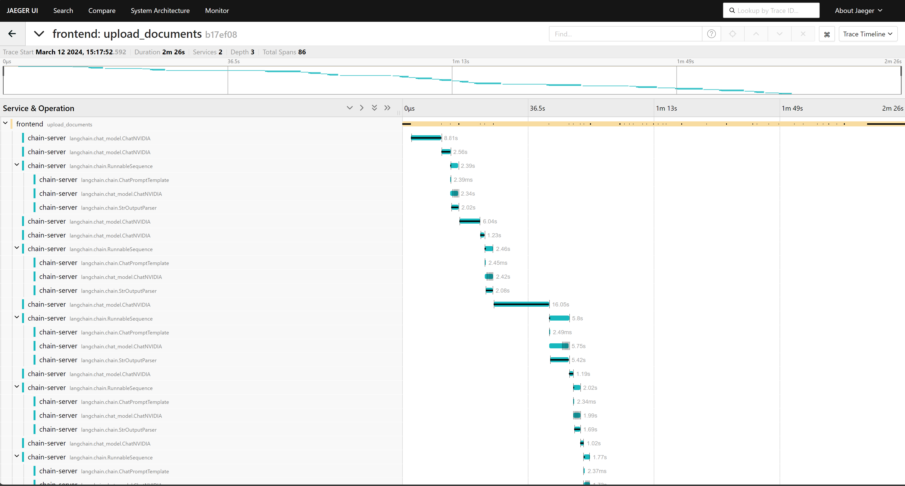

Observability Tool
Introduction
Observability is a crucial aspect that facilitates the monitoring and comprehension of the internal state and behavior of a system or application. Applications based on RAG are intricate systems that encompass the interaction of several components. To enhance the performance of these RAG-based applications, observability is an efficient mechanism for both monitoring and debugging.
The following diagram shows high-level overview of how OpenTelemetry captures the traces.

The following containers add the software components that enable observability. You can add containers and observability to any of the examples, such as using local GPUs, NVIDIA API Catalog Models, Query Decomposition, Multi-turn, and Multimodal.
OpenTelemetry Collector: Receives, processes, and exports the traces.
Jaeger: Acts as an OpenTelemetry backend that provides storage, query service, and visualizer. You can configure any other OTLP-compatible backend such as Zipkin, Prometheus, and so on. To configure an alternative backend, refer to Configuration in the OpenTelemetry documentation.
Cassandra: Provides persistent storage for traces. Jaeger supports several more storage backends such as ElasticSearch, Kafka, and Badger. For a large scale, production deployment, the Jaeger team recommends ElasticSearch over Cassandra.
Key terms
- Span
A unit of work within a system, encapsulating information about a specific operation (Eg. LLM call, embedding generation etc).
- Traces
The recording of a request as it goes through a system, tracking every service the request comes in contact with. Multiple spans make a trace logically bound by parent-child relationship.
- Root Span
The first span in a trace, denoting the beginning and end of the entire operation.
- Span Attributes
Key-value pairs a Span may consist of to provide additional context or metadata.
- Collectors
Components that process and export telemetry data from instrumented applications.
- Context
Signifies current location within the trace hierarchy. The context determines whether a new span initiates a trace or connects to an existing parent span.
- Services
Microservices that generates telemetry data.
The following diagram shows a typical trace for query that uses a knowledge base and identifies the spans and root span.

Prerequisites
Clone the Generative AI examples Git repository using Git LFS:
$ sudo apt -y install git-lfs $ git clone git@github.com:NVIDIA/GenerativeAIExamples.git $ cd GenerativeAIExamples/ $ git lfs pull
A host with an NVIDIA A100, H100, or L40S GPU.
Verify NVIDIA GPU driver version 535 or later is installed and that the GPU is in compute mode:
$ nvidia-smi -q -d compute
Example Output
==============NVSMI LOG============== Timestamp : Sun Nov 26 21:17:25 2023 Driver Version : 535.129.03 CUDA Version : 12.2 Attached GPUs : 1 GPU 00000000:CA:00.0 Compute Mode : Default
If the driver is not installed or below version 535, refer to the NVIDIA Driver Installation Quickstart Guide.
Install Docker Engine and Docker Compose. Refer to the instructions for Ubuntu.
Install the NVIDIA Container Toolkit.
Refer to the installation documentation.
When you configure the runtime, set the NVIDIA runtime as the default:
$ sudo nvidia-ctk runtime configure --runtime=docker --set-as-default
If you did not set the runtime as the default, you can reconfigure the runtime by running the preceding command.
Verify the NVIDIA container toolkit is installed and configured as the default container runtime:
$ cat /etc/docker/daemon.json
Example Output
{ "default-runtime": "nvidia", "runtimes": { "nvidia": { "args": [], "path": "nvidia-container-runtime" } } }
Run the
nvidia-smicommand in a container to verify the configuration:$ sudo docker run --rm --runtime=nvidia --gpus all ubuntu nvidia-smi -L
Example Output
GPU 0: NVIDIA A100 80GB PCIe (UUID: GPU-d8ce95c1-12f7-3174-6395-e573163a2ace)
Build and Start the Containers
In the Generative AI Examples repository, edit the
deploy/compose/configs/otel-collector-config.yamlanddeploy/compose/configs/jaeger.yamlfiles.Refer to configuration in the OpenTelemetry documentation and the Jaeger all-in-one with Cassandra reference in the Jaeger documentation.
Set following environment variables in the chain-server and rag-playground services of the corresponding example in Docker Compose file.
environment: OTEL_EXPORTER_OTLP_ENDPOINT: http://otel-collector:4317 OTEL_EXPORTER_OTLP_PROTOCOL: grpc ENABLE_TRACING: true
Deploy the RAG example:
Developer RAG Text chat bot:
$ docker compose --env-file deploy/compose/compose.env -f deploy/compose/rag-app-text-chatbot.yaml build $ docker compose --env-file deploy/compose/compose.env -f deploy/compose/rag-app-text-chatbot.yaml up -d
NVIDIA API Catalog Text chat bot:
$ docker compose --env-file deploy/compose/compose.env -f deploy/compose/rag-app-api-catalog-text-chatbot.yaml build $ docker compose --env-file deploy/compose/compose.env -f deploy/compose/rag-app-api-catalog-text-chatbot.yaml up -d
Multimodal chat bot:
$ docker compose --env-file deploy/compose/compose.env -f deploy/compose/rag-app-multimodal-chatbot.yaml build $ docker compose --env-file deploy/compose/compose.env -f deploy/compose/rag-app-multimodal-chatbot.yaml up -d
Multi-turn chat bot:
$ docker compose --env-file deploy/compose/compose.env -f deploy/compose/rag-app-multiturn-chatbot.yaml build $ docker compose --env-file deploy/compose/compose.env -f deploy/compose/rag-app-multiturn-chatbot.yaml up -d
Query Decomposition Agent:
$ docker compose --env-file deploy/compose/compose.env -f deploy/compose/rag-app-query-decomposition-agent.yaml build $ docker compose --env-file deploy/compose/compose.env -f deploy/compose/rag-app-query-decomposition-agent.yaml up -d
Start the vector database used in the preceding example:
Milvus:
$ docker compose --env-file deploy/compose/compose.env -f deploy/compose/docker-compose-vectordb.yaml up -d milvus
Pgvector:
$ docker compose --env-file deploy/compose/compose.env -f deploy/compose/docker-compose-vectordb.yaml up -d pgvector
Deploy the observability services:
$ docker compose --env-file deploy/compose/compose.env -f deploy/compose/docker-compose-observability.yaml build $ docker compose --env-file deploy/compose/compose.env -f deploy/compose/docker-compose-observability.yaml up -d
Example Output
✔ Container otel-collector Started ✔ Container cassandra Started ✔ Container compose-cassandra-schema-1 Started ✔ Container jaeger Started
Optional: Confirm the services are running:
$ docker ps --format "table {{.ID}}\t{{.Names}}\t{{.Status}}"
Example Output
CONTAINER ID NAMES STATUS beb1582320d6 jaeger Up 5 minutes 674c7bbb367e cassandra Up 6 minutes d11e35ee69f4 rag-playground Up 5 minutes 68f22b3842cb chain-server Up 5 minutes 751dd4fd80ec milvus-standalone Up 5 minutes (healthy) b435006c95c1 milvus-minio Up 6 minutes (healthy) 9108253d058d notebook-server Up 6 minutes 5315a9dc9eb4 milvus-etcd Up 6 minutes (healthy) d314a43074c8 otel-collector Up 6 minutes
Access the Jaeger web interface at
http://host-ip:16686from your web browser.
Example Traces
LlamaIndex Traces
The following screenshots show traces of LlamaIndex based examples from the Jaeger web interface.
Upload document trace

User query using knowledge base trace

LangChain Traces
NVIDIA API Catalog Example: User query without using knowledge base

Multimodal example: Upload document with graphs and images 
Query decomposition example: User query using knowledge base

Instrumenting the RAG Playground
The tracing.py module in the frontend application code performs the instrumentation. At high level, the code performs the following:
Sets up the OpenTelemetry configurations for resource name, frontend, span processor, and context propagator.
Provides instrumentation decorator functions,
instrumentation_wrapperandpredict_instrumentation_wrapper, for abstracting away the opentelemetry configurations and managing trace context across different services. The API functions in chat_client.py use the decorator functions to create new span contexts. The decorator functions inject the span contexts into the headers of the requests made to the chain server and export the span information and extracted attributes to the OpenTelemetry collector.
Instrumenting the Chain Server
The tracing.py module in the chain server application code performs the instrumentation. At high level, the code performs the following:
Sets up the OpenTelemetry configurations for resource name, chain-server, span processor, and context propagator.
Initializes the LlamaIndex OpenTelemetry callback handler in opentelemetry_callback.py. The callback handler uses LlamaIndex callbacks to track various events such as LLM calls, chunking, embedding, and so on.
Provides an instrumentation decorator functions,
llamaindex_instrumentation_wrapper,langchain_instrumentation_method_wrapperandlangchain_instrumentation_class_wrapperfor abstracting away the opentelemetry configurations and managing the context. The API functions in server.py use the decorator function to extract the trace context that is present in requests from the frontend service and attach it in the new span created by the chain-server.
You can use the decorator function, llamaindex_instrumentation_wrapper, to instrument any LlamaIndex application as long as you set the LlamaIndex OpenTelemetry callback handler, opentelemetry_callback.py, as global handler in the application.
Similarly, you can use the decorator functions langchain_instrumentation_method_wrapper and langchain_instrumentation_class_wrapper for instrumenting any Langchain applications as long as you set the Langchain OpenTelemetry callback handler, opentelemetry_callback.py, in the tracing.py module.
Adding Observability to RAG Applications
To extend the observability support to other LLM and RAG applications using the LangChain callback handlers or LlamaIndex callback handlers, refer to the following sections.
Setup
# Import the dependencies
from opentelemetry import trace
from opentelemetry.sdk.resources import SERVICE_NAME, Resource
from opentelemetry.sdk.trace import TracerProvider
from opentelemetry.sdk.trace.export import SimpleSpanProcessor
from opentelemetry.exporter.otlp.proto.grpc.trace_exporter import OTLPSpanExporter
from opentelemetry.trace.propagation.tracecontext import TraceContextTextMapPropagator
# Setup the tracer
OTEL_EXPORTER_OTLP_ENDPOINT = "localhost:4317"
resource = Resource.create({SERVICE_NAME: "sample_service"})
provider = TracerProvider(resource=resource)
processor = SimpleSpanProcessor(OTLPSpanExporter(endpoint=OTEL_EXPORTER_OTLP_ENDPOINT, insecure=True))
provider.add_span_processor(processor)
trace.set_tracer_provider(provider)
tracer = trace.get_tracer("sample_tracer")
LangChain
Copy the LangChain OpenTelemetry callback handler, opentelemetry_callback.py, module in your project. For example copy it in
utils/observabilitydirectory.Instantiate the LangChain OpenTelemetry callback handler:
from utils.observability.opentelemetry_callback import OpenTelemetryCallbackHandler otel_handler = OpenTelemetryCallbackHandler(tracer)
Use the OTEL handler.
Simple Sequential Chain
from langchain.chains import LLMChain, SimpleSequentialChain from langchain.prompts import PromptTemplate from langchain_openai import OpenAI llm = OpenAI() template = """You are a playwright. Given the title of play, it is your job to write a synopsis for that title. Title: {title} Playwright: This is a synopsis for the above play:""" prompt_template = PromptTemplate(input_variables=["title"], template=template) synopsis_chain = LLMChain(llm=llm, prompt=prompt_template) template = """You are a play critic from the New York Times. Given the synopsis of play, it is your job to write a review for that play. Play Synopsis: {synopsis} Review from a New York Times play critic of the above play:""" prompt_template = PromptTemplate(input_variables=["synopsis"], template=template) review_chain = LLMChain(llm=llm, prompt=prompt_template) overall_chain = SimpleSequentialChain( chains=[synopsis_chain, review_chain], ) # invoke review = overall_chain.invoke("Tragedy at sunset on the beach", {"callbacks":[otel_handler]}) # add the otel handler to the run method # run review = overall_chain.run("Tragedy at sunset on the beach", callbacks=[otel_handler]) # add the otel handler to the run method
Sequential Chain in LangChain Expression Language (LCEL)
from operator import itemgetter from langchain_openai import ChatOpenAI from langchain.prompts import ChatPromptTemplate from langchain.schema import StrOutputParser prompt1 = ChatPromptTemplate.from_template("what is the city {person} is from?") prompt2 = ChatPromptTemplate.from_template( "what country is the city {city} in? respond in {language}" ) model = ChatOpenAI() chain1 = prompt1 | model | StrOutputParser() chain2 = ( {"city": chain1, "language": itemgetter("language")} | prompt2 | model | StrOutputParser() ) chain2.invoke({"person": "obama", "language": "spanish"}, config={"callbacks":[otel_handler]})
Agent
from langchain.agents import AgentExecutor, load_tools, create_openai_functions_agent from langchain_openai import ChatOpenAI from langchain import hub llm = ChatOpenAI(model="gpt-3.5-turbo", temperature=0) tools = load_tools(["serpapi"]) prompt = hub.pull("hwchase17/openai-functions-agent") agent = create_openai_functions_agent(llm, tools, prompt) agent_executor = AgentExecutor(agent=agent, tools=tools) agent_executor.invoke({"input": "What is Langfuse?"}, config={"callbacks":[otel_handler]})
LLamaIndex
Copy the LangChain OpenTelemetry Callback handler, opentelemetry_callback.py, module in your project. For example copy it in
utils/observabilitydirectory.Import
OpenTelemetryCallbackHandler:from utils.observability.opentelemetry_callback import OpenTelemetryCallbackHandler otel_handler = OpenTelemetryCallbackHandler(tracer)
Use the OTEL handler.
Download data:
!mkdir -p 'data/paul_graham/' !wget 'https://raw.githubusercontent.com/run-llama/llama_index/main/docs/examples/data/paul_graham/paul_graham_essay.txt' -O 'data/paul_graham/paul_graham_essay.txt'
Set the callback handler:
from llama_index.core.callbacks import CallbackManager from llama_index.core import SummaryIndex from llama_index.core import SimpleDirectoryReader docs = SimpleDirectoryReader("./data/paul_graham").load_data() # Option 1: Explicitly use callback handler in the query engine callback_manager = CallbackManager([otel_handler]) index = SummaryIndex.from_documents(docs, callback_manager=callback_manager) query_engine = index.as_query_engine() # OR # Option 2: Set OpenTelemetry handler as global callback handler import llama_index llama_index.global_handler = OpenTelemetryCallbackHandler(tracer) index = SummaryIndex.from_documents(docs) query_engine = index.as_query_engine()